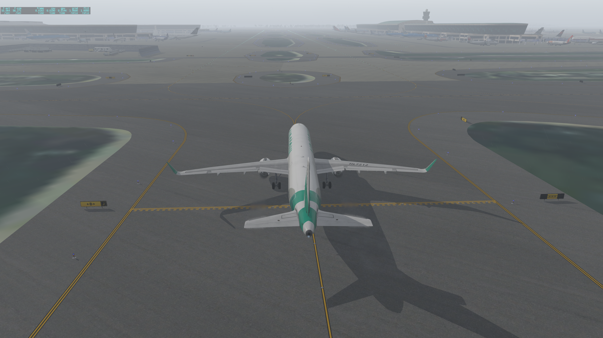
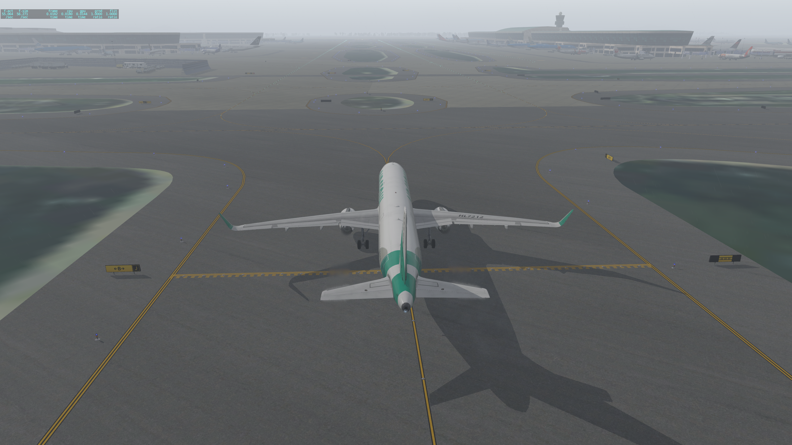

인천 TAXI OUT은 A (터미널쪽) TAXI IN은 B(활주로 쪽)이고 TCP는 나갈땐 반대활주로쪽 들어올땐 활주로쪽과 가깝다. 비교하면서 보면 이해가능.
처음에 플랜은 BINKS 라는 간단한 ARRIVAL로 파일했은 대부분 RUTAS를 이용하는 것을 확인하고 XAC VOR에서 RUTAS DIRECT해서 RUTAST.TYLER ARRIVAL 이용하였음.포인트머지 절차로 선행 항공기 없었기 때문에 VENUS 이후 TYLER로 DIRECT 하였음. 항공기 교통량에 따라서 두개의 포인트 머지 사용하는 모양이고 RUTAS T은 안쪽으로 RUTASE는 EAST쪽으로 더 나가고 멀리 도는 모양임.
 
